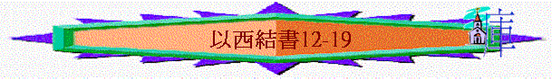

|
真 知 道 祂 |
|||
|
先知的看見(1-3) |
選民的醒覺(4-24) |
列邦的發現(25-39) |
餘民的盼望(40-48) |
|
祂是滿有榮耀權能的神 |
祂是成就怒中所定的神 |
祂是耶和華以色列的神 |
祂是復臨選民中間的神 |
二.選民的醒覺(4-24)───祂是成就怒中所定的神
~特 點:很多神想人「回頭」「離開」「追念」等字眼,同前段單是責備有所不同,另外,比前段更多比喻,為甚麼?
~神是否單想人滅亡? 神的心腸又是如何呢?
~神又如何呼籲他們回轉?
a.拆毀他們自持的觀念
i.以為還有漫長時間(12)
(1)錯誤的看法
「人子啊，在你們以色列地怎麼有這俗語，說『日子遲延，一切異象都落了空』呢？」12:22
(2)行動的糾正
「所以人子啊，你要預備擄去使用的物件，在白日當他們眼前從你所住的地方移到別處去；他們雖是悖逆之家，或者可以揣摩思想。你要在白日當他們眼前帶出你的物件去，好像預備擄去使用的物件。到了晚上，你要在他們眼前親自出去，像被擄的人出去一樣。你要在他們眼前挖通了牆，從其中將物件帶出去。到天黑時，你要當他們眼前搭在肩頭上帶出去，並要蒙住臉看不見地，因為我立你作以色列家的預兆。」12:3-6
~表明有君王在黑夜迅速的被擄去
「耶和華的話又臨到我說：「人子啊，以色列家的人說：『他所見的異象是關乎後來許多的日子，所說的預言是指著極遠的時候。』所以你要對他們說：『主耶和華如此說：我的話沒有一句再耽延的，我所說的必定成就。這是主耶和華說的。』」12:26-28
ii.以為還有屬靈偉人(13-14)
(1)先知的幻滅
(a)利己的事奉心態
「人子啊，你要說預言攻擊以色列中說預言的先知，對那些本己心發預言的說：『你們當聽耶和華的話。』」主耶和華如此說：「愚頑的先知有禍了，他們隨從己的心意，卻一無所見。」13:2-3
「人子啊，你要面向本民中、從己心發預言的女子說預言，攻擊他們，說主耶和華如此說：『這些婦女有禍了！他們為眾人的膀臂縫靠枕，給高矮之人做下垂的頭巾，為要獵取人的性命。難道你們要獵取我百姓的性命，為利己將人救活嗎？」13:17-18
~「膀臂」原文「手」,靠枕」原文「帶」,可能用一些符咒帶綁在人手中迷惑人
(b)易塌的事奉用料
「因為他們誘惑我的百姓，說：『平安！』其實沒有平安，就像有人立起牆壁，他們倒用未泡透的灰抹上。所以你要對那些抹上未泡透灰的人說：『牆要倒塌，必有暴雨漫過。大冰雹啊，你們要降下，狂風也要吹裂這牆。』這牆倒塌之後，人豈不問你們說：『你們抹上未泡透的灰在那裡呢？』」13:10-12
(c)扭曲的事奉表現
~傳遞虛假說話(不是從神來,不是真理)
~堅固惡人道路(沒有叫人回轉)
~顛倒黑白是非(沒有按理判斷)
「這些人所見的是虛假，是謊詐的占卜。他們說是耶和華說的，其實耶和華並沒有差遣他們，他們倒使人指望那話必然立定。」13:6
「我不使義人傷心，你們卻以謊話使他傷心，又堅固惡人的手，使他不回頭離開惡道得以救活。」13:22
[所以主耶和華如此說：「我要發怒，使狂風吹裂這牆，在怒中使暴雨漫過，又發怒降下大冰雹，毀滅這牆。我要這樣拆毀你們那未泡透灰所抹的牆，拆平到地，以致根基露出，牆必倒塌，你們也必在其中滅亡；你們就知道我是耶和華。我要這樣向牆和用未泡透灰抹牆的人成就我怒中所定的，並要對你們說：『牆和抹牆的人都沒有了。』這抹牆的就是以色列的先知，他們指著耶路撒冷說預言，為這城見了平安的異象，其實沒有平安。這是主耶和華說的。」「人子啊，你要
面向本民中、從己心發預言的女子說預言，攻擊他們，說主耶和華如此說：『這些婦女有禍了！他們為眾人的膀臂縫靠枕，給高矮之人做下垂的頭巾，為要獵取人的性命。難道你們要獵取我百姓的性命，為利己將人救活嗎？你們為兩把大麥，為幾塊餅，在我民中褻瀆我，對肯聽謊言的民說謊，殺死不該死的人，救活不該活的人。』」13:13-19
★事奉人員心態不好,用的材料不正確,所顯露的工程,表現自然惹神發怒!
（d）悲慘的事奉惡局
「先知若被迷惑說一句預言，是我耶和華任那先知受迷惑，我也必向他伸手，將他從我民以色列中除滅。他們必擔當自己的罪孽。先知的罪孽和求問之人的罪孽都是一樣，好使以色列家不再走迷離開我，不再因各樣的罪過玷污自己，只要作我的子民，我作他們的神。這是主耶和華說的。」14:9-11
~神要提醒選民,勿從先知的歪路,要回轉離開他們的惡道
(2)偉人的自救
「其中雖有挪亞、但以理、約伯這三人，他們只能因他們的義救自己的性命。這是主耶和華說的。」14:14
「雖有這三人在其中，主耶和華說：我指著我的永生起誓，他們連兒帶女都不能得救，只能自己得救，那地仍然荒涼。」14:16
「雖有這三人在其中，主耶和華說：我指著我的永生起誓，他們連兒帶女都不能得救，只能自己得救。」14:18
「主耶和華如此說：「我將這四樣大災，就是刀劍、饑荒、惡獸、瘟疫降在耶路撒冷，將人與牲畜從其中剪除，豈不更重嗎？」14:21
~偉人只能因他的義自救,選民行惡卻不能逃避神預定的四樣大災!
iii.以為比別人優越(15-16)
(1)仍有民族強處?
「耶和華的話臨到我說：」15:1
「看哪，已經拋在火中當作柴燒，火既燒了兩頭，中間也被燒了，還有益於工用嗎？」15:4
「所以，主耶和華如此說：「眾樹以內的葡萄樹，我怎樣使他在火中當柴，也必照樣待耶路撒冷的居民。」15:6
(2)仍可自義自誇?
(a)自誇自義
「你既斷定你姊妹為義（為義：或作當受羞辱），就要擔當自己的羞辱；因你所犯的罪比他們更為可憎，他們就比你更顯為義；你既使你的姊妹顯為義，你就要抱愧擔當自己的羞辱。」16:52
「在你驕傲的日子，你的惡行沒有顯露以先，你的口就不提你的妹妹所多瑪。那受了凌辱的亞蘭眾女和亞蘭四圍非利士的眾女都恨惡你，藐視你。」16:56-57
(b)醜惡本相
(i)忘恩負義
~神的恩
「說主耶和華對耶路撒冷如此說：你根本，你出世，是在迦南地；你父親是摩利人，你母親是赫人。論到你出世的景況，在你初生的日子沒有為你斷臍帶，也沒有用水洗你，使你潔淨，絲毫沒有撒鹽在你身上，也沒有用布裹你。誰的眼也不可憐你，為你做一件這樣的事憐恤你；但你初生的日子扔在田野，是因你被厭惡。」16:3-5
★亞摩利人、赫人是迦南地的民族,指選民起初站立之地源自迦南地
「我從你旁邊經過，見你滾在血中，就對你說：你雖在血中，仍可存活；你雖在血中，仍可存活。」16:6
「我從你旁邊經過，看見你的時候正動愛情，便用衣襟搭在你身上，遮蓋你的赤體；又向你起誓，與你結盟，你就歸於我。這是主耶和華說的。」16:8
~人的不義
「只是你仗著自己的美貌，又因你的名聲就行邪淫。你縱情淫亂，使過路的任意而行。」16:15
「哎！你這行淫的妻啊，寧肯接外人，不接丈夫。」16:32
★行淫→可指拜偶像及投靠外邦不投靠神
(ii)不守盟約
「主耶和華如此說：你這輕看誓言、背棄盟約的，我必照你所行的待你。16:59
(iii)濫用神恩
「你又將我所給你那華美的金銀、寶器為自己製造人像，與他行邪淫。」16:17
「並且你將給我所生的兒女焚獻給他。」16:20
(iv)不知羞恥
「主耶和華說：你行這一切事，都是不知羞恥妓女所行的，可見你的心是何等懦弱！」16:30
(v)更顯可憎
「看哪，你妹妹所多瑪的罪孽是這樣：他和他的眾女都心驕氣傲，糧食飽足，大享安逸，並沒有扶助困苦和窮乏人的手。」16:49
「撒瑪利亞沒有犯你一半的罪，你行可憎的事比他更多，使你的姊妹因你所行一切可憎的事，倒顯為義。」16:51
「你既斷定你姊妹為義（為義：或作當受羞辱），就要擔當自己的羞辱；因你所犯的罪比他們更為可憎，他們就比你更顯為義；你既使你的姊妹顯為義，你就要抱愧擔當自己的羞辱。」16:52
~用撒瑪利亞、所多瑪比喻以色列的姐妹,突出以色列比姐妹更不義!
(iv)自食惡果
「你也和你鄰邦放縱情慾的埃及人行淫，加增你的淫亂，惹我發怒。因此我伸手攻擊你，減少你應用的糧食，又將你交給恨你的非利士眾女（眾女是城邑的意思；本章下同），使他們任意待你。他們見你的淫行，為你羞恥。」16:26-27
「你行淫與別的婦女相反，因為不是人從你行淫；你既贈送人，人並不贈送你；所以你與別的婦女相反。」16:34
iv.以為可靠別人勢力幫助(17)
(1)二鷹的比喻----投靠埃及的虛無
「說主耶和華如此說：有一大鷹，翅膀大，翎毛長，羽毛豐滿，彩色俱備，來到利巴嫩，將香柏樹梢擰去，就是折去香柏樹儘尖的嫩枝，叼到貿易之地，放在買賣城中；又將以色列地的枝子栽於肥田裡，插在大水旁，如插柳樹，就漸漸生長，成為蔓延矮小的葡萄樹。其枝轉向那鷹，其根在鷹以下，於是成了葡萄樹，生出枝子，發出小枝。」17:3-6
~大鷹指巴比倫,香柏樹香→被擄去的以色列人
「又有一大鷹，翅膀大，羽毛多。這葡萄樹從栽種的畦中向這鷹彎過根來，發出枝子，好得他的澆灌。這樹栽於肥田多水的旁邊，好生枝子，結果子，成為佳美的葡萄樹。你要說，主耶和華如此說：這葡萄樹豈能發旺呢？鷹豈不拔出他的根來，芟除他的果子，使他枯乾，使他發的嫩葉都枯乾了嗎？也不用大力和多民，就拔出他的根來。葡萄樹雖然栽種，豈能發旺呢？一經東風，豈不全然枯乾嗎？必在生長的畦中枯乾了。」17:7-10
~另一鷹是指埃及(猶大被擄，背叛巴比倫，靠埃及法老)
~最終投靠埃及都是徒然!
(2)香柏的比喻----投靠真神的豐盛
「主耶和華如此說：「我要將香柏樹梢擰去栽上，就是從儘尖的嫩枝中折一嫩枝，栽於極高的山上；在以色列高處的山栽上。他就生枝子，結果子，成為佳美的香柏樹，各類飛鳥都必宿在其下，就是宿在枝子的蔭下。田野的樹木都必知道我耶和華使高樹矮小，矮樹高大；青樹枯乾，枯樹發旺。我耶和華如此說，也如此行了。」17:22-24
v.以為仍有領袖統領(19)
「你當為以色列的王作起哀歌，說：你的母親是什麼呢？是個母獅子，蹲伏在獅子中間，在少壯獅子中養育小獅子。在他小獅子中養大一個，成了少壯獅子，學會抓食而吃人。列國聽見了就把他捉在他們的坑中，用鉤子拉到埃及地去。母獅見自己等候失了指望，就從他小獅子中又將一個養為少壯獅子。他在眾獅子中走來走去，成了少壯獅子，學會抓食而吃人。」19:1-6
~母親(母獅子)可能指約哈斯的母親,小獅子指約哈斯（他後來被擄至埃及）,另一小壯獅子指約哈斯的兄弟西底家(最後一個王,後?被擄至巴比倫）
(1)君王的哀歌
(2)王朝的覆沒
「但這葡萄樹因忿怒被拔出摔在地上；東風吹乾其上的果子，堅固的枝幹折斷枯乾，被火燒毀了；如今栽於曠野乾旱無水之地。火也從他枝幹中發出，燒滅果子，以致沒有堅固的枝幹可做掌權者的杖。這是哀歌，也必用以作哀歌。」19:12-14
~王朝被拆毀，沒有可作掌權的!
b.引導他們明白神心腸
i.儘然人悖逆不聽,祂仍想設法令人明白得通
「所以人子啊，你要預備擄去使用的物件，在白日當他們眼前從你所住的地方移到別處去；他們雖是悖逆之家，或者可以揣摩思想。」12:3
ii.儘然人輕看誓盟,祂仍沒背負與人所立之約
「然而我要追念在你幼年時與你所立的約，也要與你立定永約。你接待你姊姊和你妹妹的時候，你要追念你所行的，自覺慚愧；並且我要將他們賜你為女兒，卻不是按著前約。我要堅定與你所立的約（你就知道我是耶和華）。」16:60-62
iii.儘然人應受報應,祂仍不喜見惡人滅絕死亡
「主耶和華說：惡人死亡，豈是我喜悅的嗎？不是喜悅他回頭離開所行的道存活嗎？」18:23
「主耶和華說：我不喜悅那死人之死，所以你們當回頭而存活。」18:32
c.說明他們有轉機出路
「所以，主耶和華如此說：「眾樹以內的葡萄樹，我怎樣使他在火中當柴，也必照樣待耶路撒冷的居民。」14:6
「他若生一個兒子，見父親所犯的一切罪便懼怕（有古卷：思量），不照樣去做；未曾在山上吃過祭偶像之物，未曾仰望以色列家的偶像，未曾玷污鄰舍的妻，未曾虧負人，未曾取人的當頭，未曾搶奪人的物件，卻將食物給飢餓的人吃，將衣服給赤身的人穿，縮手不害貧窮人，未曾向借錢的弟兄取利，也未曾向借糧的弟兄多要；他順從我的典章，遵行我的律例，就不因父親的罪孽死亡，定要存活。」18:14-17
「再者，惡人若回頭離開所行的惡，行正直與合理的事，他必將性命救活了。因為他思量，回頭離開所犯的一切罪過，必定存活，不至死亡。以色列家還說：『主的道不公平！』以色列家啊，我的道豈不公平嗎？你們的道豈不是不公平嗎？」18:27-29
「所以主耶和華說：「以色列家啊，我必按你們各人所行的審判你們。你們當回頭離開所犯的一切罪過。這樣，罪孽必不使你們敗亡。你們要將所犯的一切罪過盡行拋棄，自做一個新心和新靈。以色列家啊，你們何必死亡呢？主耶和華說：我不喜悅那死人之死所以你們當回頭而存活。」18:30-32
i.懼怕行惡
ii.自覺抱愧
iii.回頭離罪
iv.盡行拋棄
v.心意更新
vi.生活行義
~仍得存活,不被滅絕!